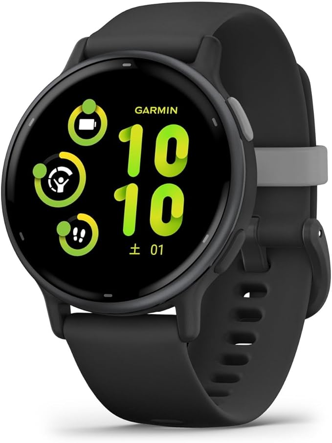

江の島旅行 準備編
というわけで江の島にいきました。
今回は準備編です(少しでも記事の数を増やしたい)
所持品紹介
スマホ (xiaomi 15 ultra)
カメラ付きスマホ
SoCがSnapdragon 8 Eliteだから困ることなし。
バカでかいカメラ持つのも荷物なので旅行での写真は全てこれで撮影します。(動画や夜景は別のアクションカメラかも)
FeliCa(おサイフケータイ)が非搭載なのでそれだけが不満。てか未だにFeliCaを使ってる日本が悪い。
腕時計 (GARMIN vivoactive 5)
ずっと使ってるやつ
歩数、消費カロリー、移動距離、気温、天気が一画面で全部見れる。
GPSがついててGoogleMapとの連携で方向も指示してくれるから迷子にならないですむ。
FeliCaも搭載しててほとんどの決済を腕をかざすだけで済ませられる
なんでこの性能のスマートウォッチが安価で買えるんだ？
あとはサイフとイヤホンと軽食と経口補水液と水1本とモバイルバッテリー(30000mAh)！！！
水は常に持っておけよ！！！！約束だぞ！！！
前編に続く